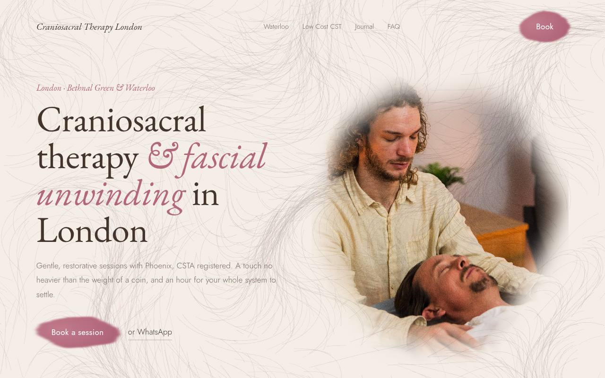
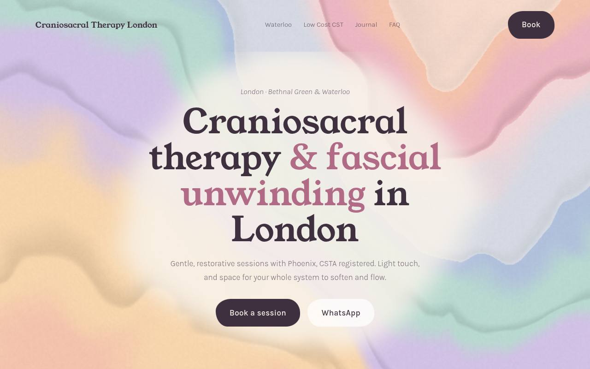
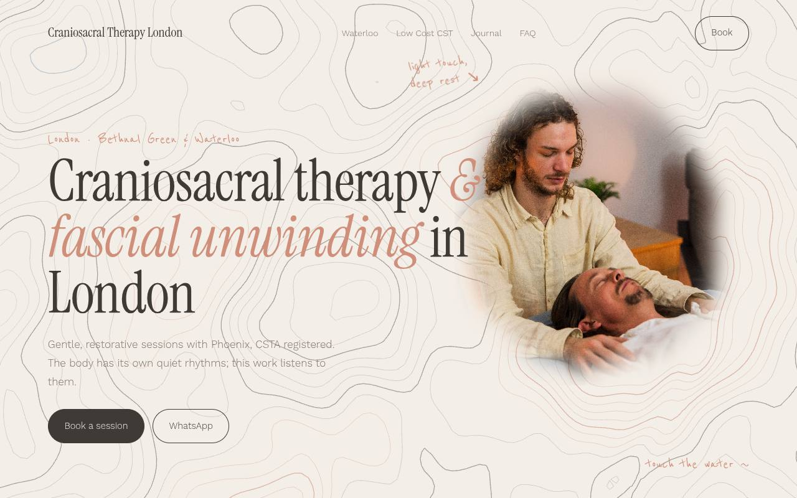
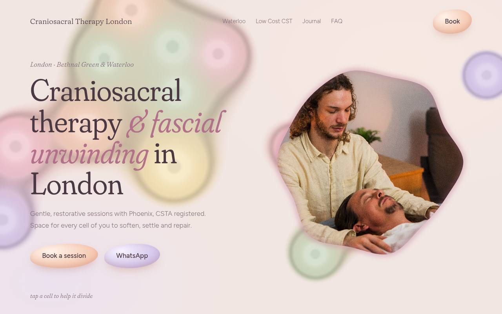
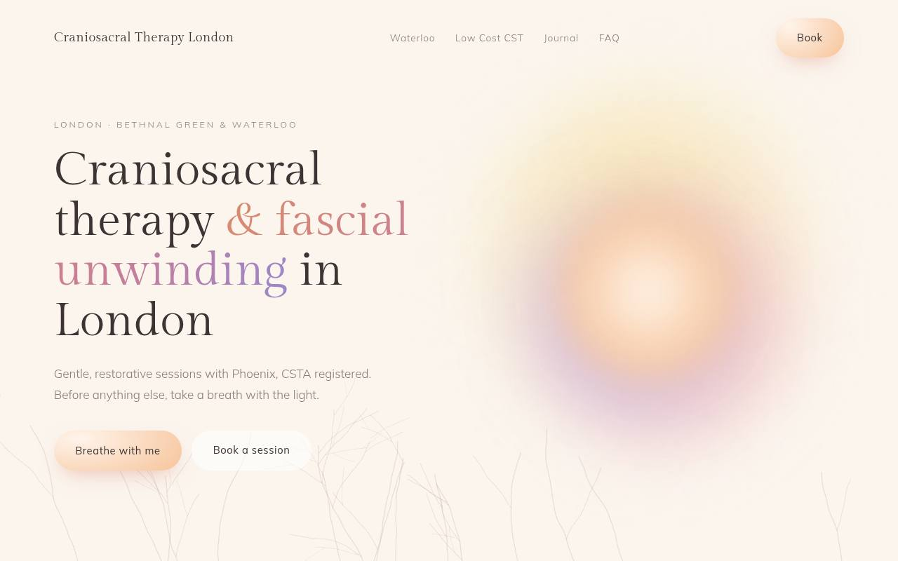

Mycelium Silk
The smoke becomes silk: thousands of fine, hand-drawn threads, like hyphae or fascia, flowing across warm paper and over the photos in sepia and rose ink. Your cursor stirs them into slow eddies. Further down, draw a line and watch it grow roots.
Open concept →
Marbled Watercolour
Soft pastel pigment floating on water. Drag through it and the colours comb and swirl behind you. Photos float in painted pools; the conditions are pastel pebbles that slowly change shape.
Open concept →
Ripple Lines
Hand-drawn contour lines, like a map of the body or rings on water. Touch the page and a ripple travels through them; the lines wrap around each photo as if it sat on a hill. The breathing section is a pool whose rings open and settle with you.
Open concept →
Soft Culture
A gentle culture of pastel cells, like looking through a warm microscope. They drift, merge and divide on their own; tap one to help it divide. The photo lives inside a cell whose membrane breathes and wobbles.
Open concept →
Aura
The quietest direction: blurred colour auras, faint roots growing along the edges, lots of air. The hero is a breathing space; press "Breathe with me" and the light breathes with you. A soft glow follows your cursor.
Open concept →